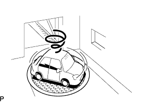

СИСТЕМА НАВИГАЦИИ (для моделей с жестким диском) > Курсор или карта вращаются, когда автомобиль неподвижен |
| 1.ПРОВЕРЬТЕ СОСТОЯНИЕ |
|  |
Узнайте у клиента, поворачивался ли автомобиль на поворотной платформе.
|
| ||||
| OK: ПЕРЕЙДИТЕ К СЛЕДУЮЩЕМУ ПРЕДПОЛАГАЕМОМУ УЧАСТКУ, УКАЗАННОМУ В ТАБЛИЦЕ ПРИЗНАКОВ НЕИСПРАВНОСТЕЙ | ||
| ||